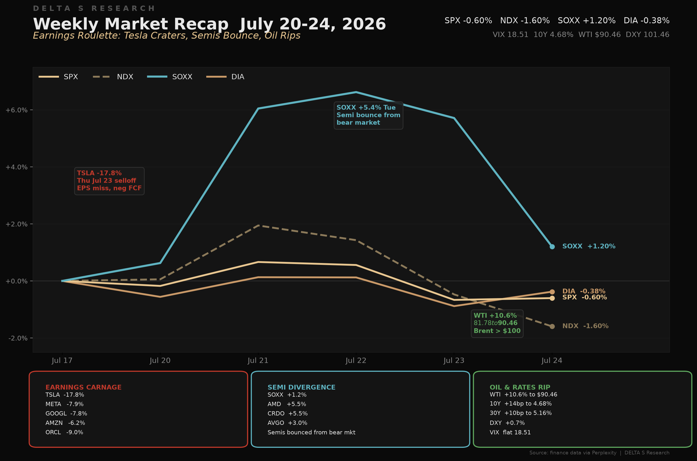
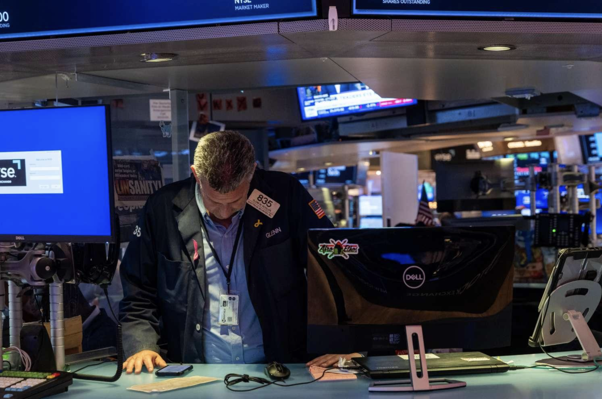
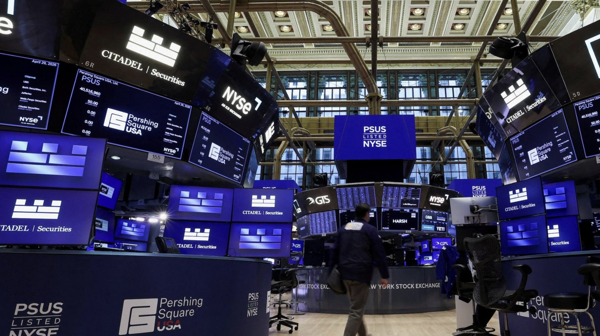
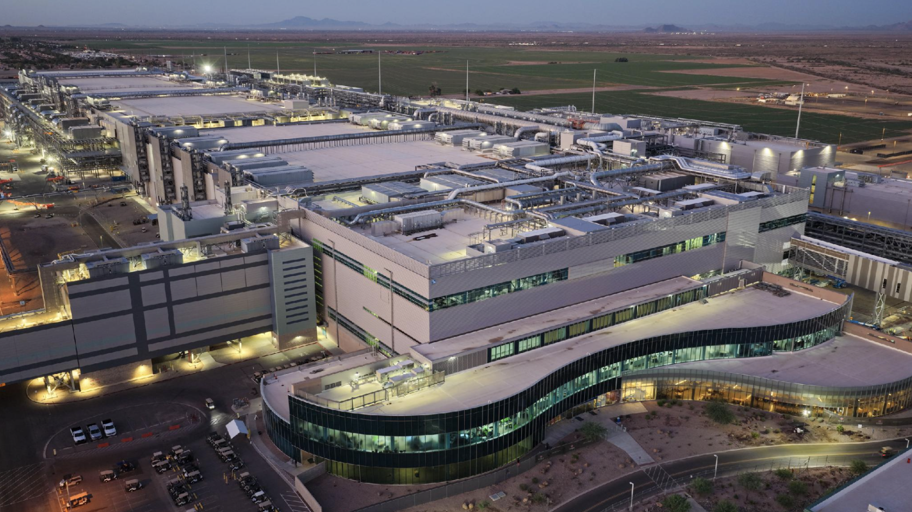

The Week in Five Bullets
- Dispersion, not direction. SPX -0.60% to 7,412.88. NDX (Nasdaq 100) -1.60%. SOXX +1.20%, recovering part of the prior week drawdown. DIA -0.38%. Index-level moves were modest; single-name moves were not.
- Tesla fell 17.82% on the week. EPS $0.33 against $0.49 consensus. Free cash flow of -$1.09B. Capex more than doubled to $5.79B, with full-year capex guided above $25B. Revenue of $28.24B did beat the $25.55B estimate.
- Large-cap tech de-rated on capital intensity. META -7.87%, GOOGL -7.77%, AMZN -6.15%, ORCL -9.04%. Alphabet grew revenue 24% and still fell, as the raised $205B capex guidance shifted the question from demand to return on capital. Estimates of Thursday’s single-day Magnificent Seven decline range from $767B (Bloomberg) to roughly $800B (CNBC).
- WTI crude advanced 10.61% to $90.46. Brent traded above $100 intraday Thursday, up roughly 40% in July. Drivers: 13 consecutive nights of US-Iran strikes, a Houthi blockade of Saudi shipping, and constrained transit through the Strait of Hormuz. US retail gasoline moved back above $4 per gallon.
- Rates repriced; index volatility did not. 10Y closed at 4.68% (+14bp), after touching 4.71% intraweek, the highest since January 2025. 30Y +10bp to 5.16%. Fed funds futures moved to roughly 35% odds of a July hike and 82% for September. VIX closed at 18.51, little changed, with a Thursday intraday high of 20.72.
The Week’s Dominant Narrative: Capital Intensity Repriced
- Thursday July 23 was the pivot. The Magnificent Seven recorded their largest single-day decline since the April 2025 tariff episode. Reported estimates of the drawdown range from $767B (Bloomberg) to roughly $800B (CNBC). The proximate triggers were Alphabet’s raised capex guidance and Tesla’s earnings miss.
- Tesla: revenue beat, margin did not. Revenue $28.24B versus $25.55B consensus (+25.5% YoY). EPS $0.33 versus $0.49 consensus, a 34% negative surprise. Operating margin 1.4%, down 269bps YoY. GAAP operating income -57% YoY to $398M. FCF -$1.09B. Capex $5.79B. The stock ended the week -17.82%.
- Alphabet: strong quarter, weak reception. Revenue $119.8B versus $116.9B consensus (+24% YoY, 12th consecutive quarter of double-digit growth). Cloud $24.8B (+82% YoY), operating margin 35.6% from 20.7%, backlog $514B. Capex $44.9B (+100% YoY) with full-year guidance raised to $205B. FCF -$5.9B. The stock fell 7.1% Thursday, its worst session since May 2025.
- Intel provided the counter-example. Revenue $16.13B versus $14.33B consensus (+25.4% YoY, the strongest growth in over 15 years). EPS $0.42 against $0.21 consensus. Seventh consecutive quarter above guidance. 18A node output ran 25% above target.
- The bifurcation is structural, and reflexive. Hyperscalers de-rated (META -7.87%, GOOGL -7.77%) while semiconductor names re-rated (SOXX +1.20%, AMD +5.47%, CRDO +5.48%). The two are not independent: chip demand is a function of the same hyperscaler capex the market is now discounting. Positioning long semis against short hyperscalers carries embedded correlation risk.

What Volatility Markets Priced
- VIX closed at 18.51, essentially unchanged on our series. The intraweek high was 20.72 on Thursday. On a Friday-close basis the index registered almost none of the week’s single-name activity. Note that VIX levels differ modestly across vendor series; we use the finance connector series consistently here.
- Realized dispersion is where the risk showed up. TSLA -17.82%, ORCL -9.04%, META -7.87%, GOOGL -7.77%, AMZN -6.15% on one side; CRDO +5.48%, AMD +5.47%, JPM +3.49% on the other. Index-level variance understated constituent-level variance by a wide margin. Correlation, not volatility, did the work.
- The repricing was in rates, not equity vol. Fed funds futures moved to roughly 35% odds of a July hike, from under 12% a week earlier, and roughly 82% for September. Prediction-market pricing was materially lower: Kalshi showed September odds near 48%. The spread between the two is itself informative.
- Jobless claims at 187,000 removed a constraint on the Fed. Down 22,000 from 209,000 prior, the lowest reading since 1969. The print covered the survey week for the July employment report, so it carries forward into next month’s data.
- Two shocks partially offset at the index level. An earnings-driven de-grossing in large-cap tech and an energy supply shock ran concurrently on unrelated drivers. Their net effect on the index was small, which is why VIX did not move. That offset is not stable and should not be read as low risk.

Cross Asset Signals
- Rates repriced higher across the curve. 10Y closed at 4.68% (+14bp), having touched 4.71% intraweek, the highest since January 2025. 30Y +10bp to 5.16%. The drivers were the energy move, the labour print, and the shift in policy expectations, in that order of contribution.
- WTI +10.61% to $90.46; Brent above $100 intraday. Brent is up roughly 40% in July. Thirteen consecutive nights of US-Iran strikes. The Houthis declared a naval blockade of Saudi Arabia and struck two Saudi tankers in the Red Sea. US retail gasoline moved back above $4 per gallon. Note the two benchmarks are quoted separately and should not be conflated.
- DXY +0.70% to 101.46, near the top of its 52-week range. Range 95.55 to 101.80. The dollar gained on both the rate differential and the geopolitical bid, which are not fully separable this week.
- Gold +0.93% (GLD). Gold advanced despite higher real yields. That combination is the more notable observation: it suggests the geopolitical premium is being held rather than traded.
- BTC +0.30% at approximately $64,083. Bitcoin was close to unchanged through Thursday’s equity decline, down under 1% on the day. One week of low correlation is not a regime change, but it is worth tracking given how tightly the asset has traded with large-cap tech.
- Section 301 tariffs on 60 trading partners took effect Friday July 24. The measures cover 99.4% of US imports and were imposed citing enforcement of forced-labour bans. Goods in transit are exempt until July 28. China is expected to defer a response ahead of Xi’s US visit.
- Flows point to rotation rather than de-risking. US equity funds saw -$7.3B of outflows, a second consecutive week. Emerging market funds recorded a record +$29.6B inflow, with China accounting for +$21.3B. Bond funds ended a 13-week inflow streak. Capital is moving across regions, not to cash.
Structural Fragilities
- The market is now underwriting AI capex, not just AI demand. Alphabet’s $205B capex guidance, Tesla’s negative free cash flow, and Thursday’s Magnificent Seven decline together mark the first sustained test of return on capital rather than revenue growth. Demand was not in question this week; payback period was.
- The long-semis, short-hyperscaler trade is reflexive. Semiconductor names re-rated (SOXX +1.20%, AMD +5.47%) while hyperscalers de-rated (META -7.87%, GOOGL -7.77%). Semiconductor demand is downstream of hyperscaler capex. If capex plans are cut, chip earnings follow with a lag. The two legs are not independent.
- The oil-to-inflation channel is open again. A 10.6% weekly WTI move into a tight labour market (claims at 187,000) and rising hike odds means the disinflation path is now contingent on Hormuz. Rates are trading energy as much as CPI.
- Concentration risk is rotating, not resolving. Record EM and China inflows ($29.6B) alongside US equity outflows ($7.3B) reflect a change of venue, not a reduction in gross exposure. If the rotation continues, a 0.60% index decline understates the underlying repositioning.
- The seasonal window is unfavourable. Per BofA, the S&P has been higher only 55.1% of the time over August to October, the weakest three-month stretch in data going back to 1928. That coincides with an FOMC meeting carrying roughly 35% hike odds.

What We Are Watching Next
- FOMC decision (Wed July 29, 2:00 PM ET). Fed funds futures price roughly 35% odds of a hike. Forward guidance will matter more than the decision itself. The June minutes recorded that "a few" participants favoured a hike; pricing has moved materially since.
- GDP advance estimate (Thu July 30, 8:30 AM ET). Q2 GDP expected. Atlanta Fed GDPNow forecasting 1.3% annualized. Q1 final was 2.1%.
- Core PCE (Thu July 30, 8:30 AM ET). Fed’s preferred inflation gauge. June core PCE expected 3.3% YoY (from 3.4% in May). May was 3.4% YoY, highest since October 2023.
- Megacap earnings gauntlet (July 28 to 30). Meta, Microsoft, Amazon and Apple all report, alongside Visa, Ford, Boeing, Coca-Cola, Qualcomm, Robinhood, Coinbase, Chevron and AbbVie. The question is whether the capex-penalty dynamic extends to the remaining hyperscalers or proves specific to Alphabet.
- Middle East escalation. Reported consideration of expanded strikes on Iran, plus the Houthi Red Sea blockade of Saudi Arabia. Any further disruption to tanker traffic reprices the inflation tail directly through crude.
- New tariffs full effect (July 28). Section 301 tariffs on 60 partners, covering 99.4% of US imports. The in-transit exemption lapses July 28. Watch for retaliation and for pass-through into goods prices.
- Jobless claims (Thu July 30). Prior week 187,000, the lowest since 1969. Another sub-200,000 print would reinforce the hawkish case into September.
- Month-end and seasonality. July is on track to close lower. August and September are historically the weakest two months for the S&P 500. Month-end positioning will set the starting point for that window.
Sources and References
- Reuters: https://www.reuters.com/world/us/trump-imposes-forced-labor-duties-60-trading-partners-as-10-us-tariffs-expire-2026-07-24/
- CNBC: https://www.cnbc.com/2026/07/24/stock-market-next-week-outlook-for-july-27-31-2026.html
- Bloomberg: https://www.bloomberg.com/news/articles/2026-07-23/magnificent-7-loses-767-billion-as-ai-skeptics-dump-tech-stocks
- CNBC (Tesla): https://www.cnbc.com/2026/07/22/tesla-tsla-q2-2026-earnings-report.html
- CNBC (Alphabet): https://www.cnbc.com/2026/07/22/google-earnings-q2-goog-live-updates.html
- CNBC (Intel): https://www.cnbc.com/2026/07/23/intel-intc-earnings-report-q2-2026.html
- Reuters (Jobless Claims): https://www.reuters.com/world/us/us-weekly-jobless-claims-fall-sharply-latest-week-2026-07-23/
- CNBC (Fed Odds): https://www.cnbc.com/2026/07/23/fed-interest-rate-odds-oil-jobless-claims.html
- Reuters (Nvidia-Amkor): https://www.reuters.com/world/asia-pacific/nvidia-amkor-strike-15-billion-chip-packaging-deal-2026-07-23/
- CNBC (10Y Yield): https://www.cnbc.com/2026/07/23/the-10-year-treasury-yield-could-test-5percent-after-its-latest-spike.html
- Reuters (Fund Flows): https://www.reuters.com/business/retail-consumer/us-equity-funds-log-outflows-second-straight-week-tech-earnings-eyed-2026-07-24/
- CoinDesk: https://www.coindesk.com/markets/2026/07/24/bitcoin-holds-near-usd65-000-as-usd800-billion-ai-selloff-leaves-crypto-largely-untouched
- Federal Reserve: https://www.federalreserve.gov/monetarypolicy/fomccalendars.htm
- Reuters (Iran War): https://www.reuters.com/world/middle-east/iran-war-drains-us-blood-treasure-2026-07-22/
- CNBC (Chip Stocks): https://www.cnbc.com/2026/07/20/chip-stocks-just-had-their-worst-week-in-over-a-year-is-now-the-time-to-buy.html
- BEA: https://www.bea.gov/news/2026/personal-income-and-outlays-may-2026
- Investopedia: https://www.investopedia.com/stock-market-today-dow-jones-s-and-p-500-07232026-12025025
- Tom’s Hardware: https://www.tomshardware.com/tech-industry/semiconductors/intels-fab-52-is-bigger-and-better-equipped-than-tsmcs-arizona-facilities-intels-production-volumes-dwarf-tsmcs-operations-in-the-u-s